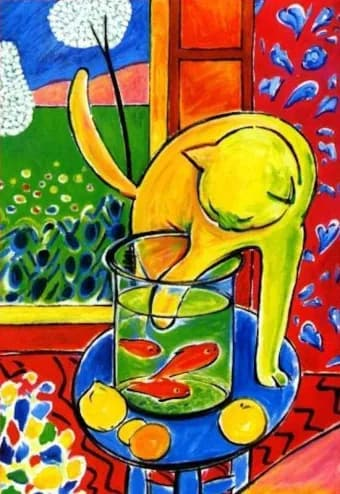

Gatos y Peces de Colores 
Henry Matisse
Esta obra creada en 1994 juega con las formas y volúmenes del felino, dotando al cuadro de gran alegría y expresividad a través del uso del color y las formas.